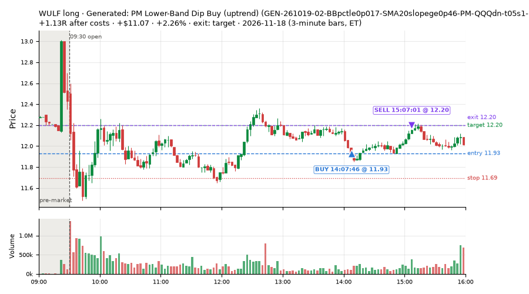
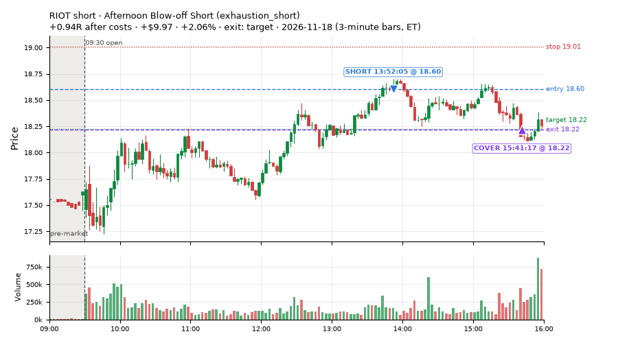
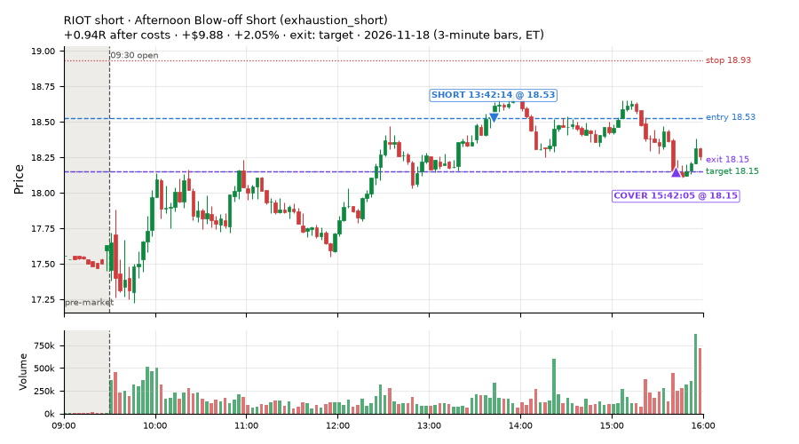
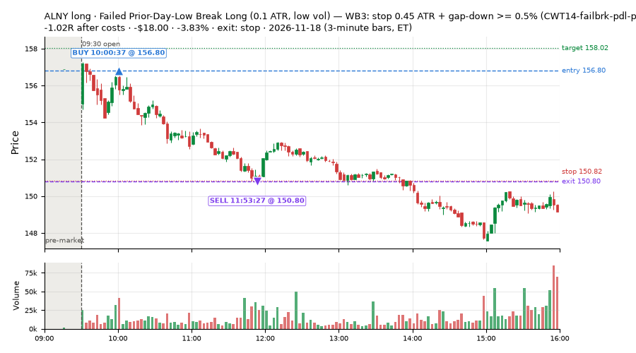
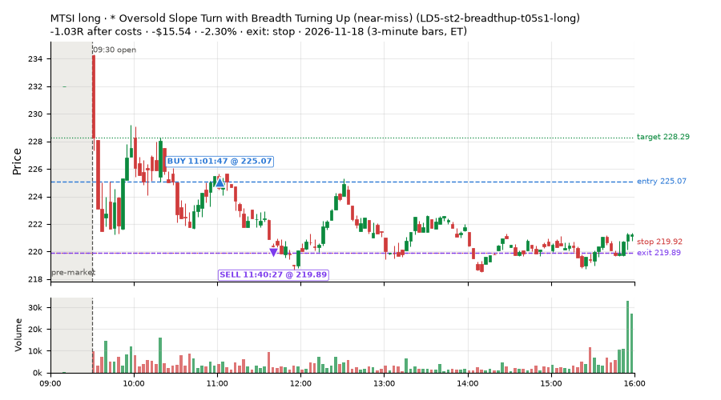
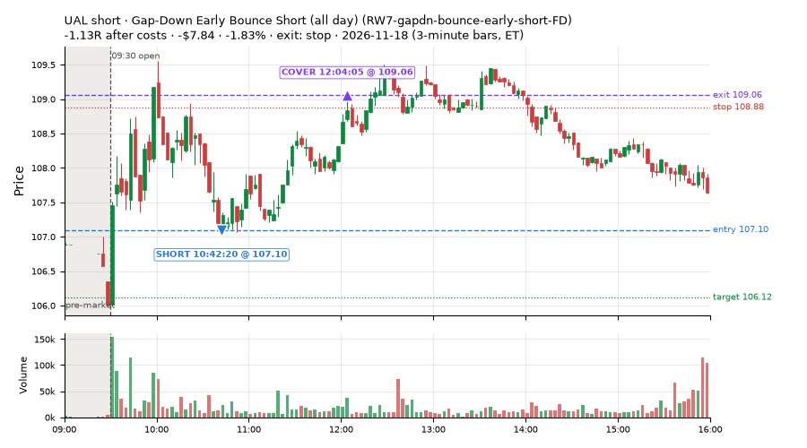
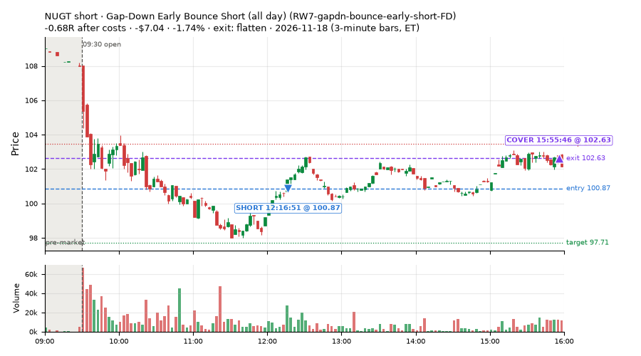
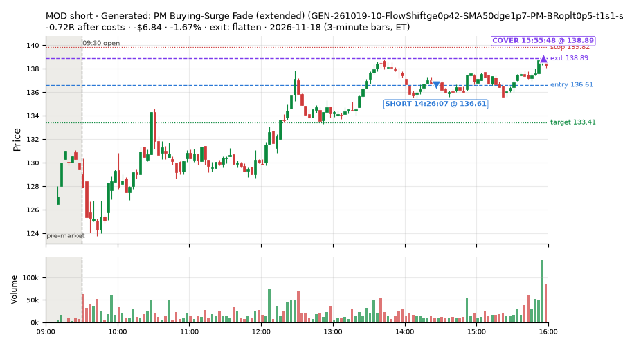

114 trades · win rate 56% · P/L $23.23
PROBATION: no live setup has passed both locked test periods. 10 owner-directed setups added 2026-10-08 (MarcoFlow top 5 + 5 new), untested live. RW6G1 (RW6 + VWAP band guard) added 2026-10-09, probation.

| Symbol | Setup | Side | In | Out | Entry | Exit | Exit reason | % gained | P/L |
|---|---|---|---|---|---|---|---|---|---|
| WULF | Generated: PM Lower-Band Dip Buy (uptrend) (GEN-261019-02-BBpctle0p017-SMA20slopege0p46-PM-QQQdn-t05s1-long) | long | 14:07 | 15:07 | 11.93 | 12.20 | target | +2.26% | $11.07 |
| RIOT | Afternoon Blow-off Short (exhaustion_short) | short | 13:52 | 15:41 | 18.60 | 18.22 | target | +2.06% | $9.97 |
| RIOT | Afternoon Blow-off Short (exhaustion_short) | short | 13:42 | 15:42 | 18.53 | 18.15 | target | +2.05% | $9.88 |
| Symbol | Setup | Side | In | Out | Entry | Exit | Exit reason | % lost | P/L |
|---|---|---|---|---|---|---|---|---|---|
| ALNY | CWT14-failbrk-pdl-p10-lowvol-long-WB3 | long | 10:00 | 11:53 | 156.80 | 150.80 | stop | -3.83% | $-18.00 |
| MTSI | LD5-st2-breadthup-t05s1-long | long | 11:01 | 11:40 | 225.07 | 219.89 | stop | -2.30% | $-15.54 |
| UAL | RW7-gapdn-bounce-early-short-FD | short | 10:42 | 12:04 | 107.10 | 109.06 | stop | -1.83% | $-7.84 |
| NUGT | RW7-gapdn-bounce-early-short-FD | short | 12:16 | 15:55 | 100.87 | 102.63 | flatten | -1.74% | $-7.04 |
| MOD | GEN-261019-10-FlowShiftge0p42-SMA50dge1p7-PM-BRoplt0p5-t1s1-short | short | 14:26 | 15:55 | 136.61 | 138.89 | flatten | -1.67% | $-6.84 |








Signal to fill: median 1s, 90th percentile 3s (113 trades). Bars close each minute; the order follows the bar close.
Best excursion (MFE): median 0.50R; worst (MAE) median 0.52R. 28% of trades never got +0.25R in our favour; 2 reached +1R and still closed at or below 0.
| Symbol | Setup | Best R | Worst R | Closed R |
|---|---|---|---|---|
| SCCO | RW7-gapdn-bounce-early-short-FD | +1.57 | -1.13 | -1.18 |
| ZS | GEN-261021-05-RSIslopelem14-ORHdistge0p42-LAM-BRvwlt0p3-t1s05-long | +1.27 | -1.28 | -1.15 |
| WEC | RW7-gapdn-bounce-early-short-FD | +0.84 | -1.05 | -1.11 |
| HZN | RW7-gapdn-bounce-early-short-FD | +0.51 | -0.99 | -1.11 |
| FNV | RW7-gapdn-bounce-early-short-FD | +0.46 | -1.08 | -1.09 |
| Entry time | Trades | Win | Avg R | P/L |
|---|---|---|---|---|
| 09:50-10:30 | 19 | 63% | -0.10 | $-25.33 |
| 10:30-11:30 | 22 | 36% | -0.43 | $-43.93 |
| 11:30-13:00 | 29 | 55% | +0.02 | $-2.49 |
| 13:00-14:00 | 19 | 58% | +0.17 | $26.28 |
| 14:00-16:00 | 25 | 68% | +0.19 | $68.70 |
| Setup | Trades | Win | Avg R after costs | Adj R (net of SPY) | Avg R ex-market (all sessions) | P/L |
|---|---|---|---|---|---|---|
| Failed Prior-Day-Low Break Long (0.1 ATR, low vol) — WB3: stop 0.45 ATR + gap-down >= 0.5% (CWT14-failbrk-pdl-p10-lowvol-long-WB3) | 20.0 | 70% | -0.05 | -0.03 | -0.12 (beta +1.07, n 46) | $-14.93 |
| Generated: PM Lower-Band Dip Buy (uptrend) (GEN-261019-02-BBpctle0p017-SMA20slopege0p46-PM-QQQdn-t05s1-long) | 3.0 | 67% | +0.53 | +0.51 | +0.47 (beta +0.27, n 5) | $18.28 |
| Generated: PM Buying-Surge Fade (extended) (GEN-261019-10-FlowShiftge0p42-SMA50dge1p7-PM-BRoplt0p5-t1s1-short) | 9.0 | 67% | +0.22 | +0.21 | +0.24 (beta -0.23, n 23) | $30.91 |
| Generated: Late-AM Strong-Stock Dip Buy (GEN-261021-05-RSIslopelem14-ORHdistge0p42-LAM-BRvwlt0p3-t1s05-long) | 2.0 | 50% | +0.25 | -0.06 | – | $4.48 |
| Generated: Late New-High Short (QQQ down) (GEN-261022-03-NewHOD-Ret15mATRge0p12-SMA20dge0p59-LATE-QQQdn-t05s1-short) | 3.0 | 100% | +0.49 | +0.44 | +0.71 (beta +3.62, n 6) | $14.06 |
| Generated: Lunch Trend Buy (MACD rising) (GEN-261023-10-MACDhge0p12-VWAPcrossesle0-EMAdiffge0p16-LUNCH-BRvwlt0p4-hold-long) | 1.0 | 0% | -0.81 | -1.11 | – | $-4.42 |
| * Oversold Slope Turn with Breadth Turning Up (near-miss) (LD5-st2-breadthup-t05s1-long) | 2.0 | 0% | -0.71 | -0.64 | – | $-21.75 |
| Afternoon VWAP Reclaim Fade (all day) (NS4-pm-vwap-reclaim-oversold-short-FD) | 1.0 | 0% | -0.70 | -0.48 | -0.58 (beta -2.01, n 19) | $-1.98 |
| Gap-Down Early Bounce Short (all day) (RW7-gapdn-bounce-early-short-FD) | 52.0 | 50% | -0.13 | -0.11 | -0.07 (beta -1.00, n 200) | $-29.41 |
| Afternoon Blow-off Short (exhaustion_short) failed Apr-Jun holdout: -0.020R/trade over 622 trades | 18.0 | 56% | +0.13 | -0.02 | -0.08 (beta -0.91, n 41) | $25.13 |
| Index Last-Half-Hour Momentum (intraday_momentum) failed Apr-Jun holdout: -0.091R/trade over 147 trades | 3.0 | 67% | +0.13 | +0.02 | +0.01 (beta -1.07, n 14) | $2.86 |
Market direction (SPY, beta 1) accounted for $1.19 of today's $23.23; the rest ($22.04) came from the setups themselves. Avg R net of SPY: -0.04 (incl. a hedge leg's cost; report only).
24 setups live today. Today: 239 signals, 114 taken, 1 lost because another setup held the symbol (0%). Since 2026-11-12 (5 sessions): 1053 signals, 499 taken, 6 lost to other setups (1%). Peak open positions today 69 of 400 slots. Earnings blackout removed 321 symbols before scanning.
Simulated playing time (not live): 553 what-if trades of signals not taken, avg +0.00R, 55% winners; of them 6 lost to another setup (avg -0.08R).
Silent: IDX3-spy075-0955-3x-trail, GEN-261028-04-ORBfailUp-RSI14le22-Gaplem1p2-LATE-BRvwgt0p5-holdtr-long · Starved: MF1-945-flowsell-vwapup
| Prio | Setup | Today sig / taken | Sessions | Signals / taken / trades | Taken/day | Expected/day | Lost to other setups | Lost to (setup n) | Top skip reasons | SIMULATED: not-taken n / avg R / win | Verdict |
|---|---|---|---|---|---|---|---|---|---|---|---|
| 1 | Gap-Down Bounce-off-Low Fade (all day) — WB4: bounce > 0.82 ATR, RSI5 ≥ 50, 75-min hold L3-gap-slope-lowdist-FD-WB4 | 7 / 0 | 2 | 13 / 1 / 1 | 0.50 | – | 0 | – | not shortable / shorts off 6, spread / quote / size 5, other 1 | 12 / -0.09R / 50% | slow 2.5 entries/week; ~24 weeks to 60 trades |
| 2 | Failed Prior-Day-Low Break Long (0.1 ATR, low vol) — WB3: stop 0.45 ATR + gap-down >= 0.5% CWT14-failbrk-pdl-p10-lowvol-long-WB3 | 35 / 20 | 2 | 72 / 46 / 46 | 23.00 | – | 0 | – | spread / quote / size 22, other 4 | 25 / -0.08R / 72% | ok 115.0 entries/week |
| 3 | Gap-Down VWAP Loss Short (10% gap) — WB4: below open, real bounce, ADV 20M CWT09-gapdn-vwaploss-g10-short-WB4 | 1 / 0 | 2 | 1 / 0 / 0 | 0.00 | – | 0 | – | not shortable / shorts off 1 | 1 / -0.16R / 0% | slow no entries yet |
| 4 | Index Dip Bounce 3 3x S&P IDX3-spy075-0955-3x-trail | 0 / 0 | 5 | 0 / 0 / 0 | 0.00 | – | 0 | – | – | 0 / – | silent no signals in 5 session(s); no expected rate on file |
| 5 | * Oversold Slope Turn with Breadth Turning Up (near-miss) LD5-st2-breadthup-t05s1-long | 2 / 2 | 5 | 3 / 3 / 3 | 0.60 | – | 0 | – | – | 0 / – | slow 3.0 entries/week; ~20 weeks to 60 trades |
| 6 | Generated: Late-AM Strong-Stock Dip Buy GEN-261021-05-RSIslopelem14-ORHdistge0p42-LAM-BRvwlt0p3-t1s05-long | 8 / 2 | 3 | 22 / 4 / 4 | 1.33 | – | 0 | – | other 12, spread / quote / size 6 | 18 / -0.04R / 39% | slow 6.7 entries/week; ~9 weeks to 60 trades |
| 7 | NS2 Short, SPY Up 0.5%, Not Friday (near-miss) NM-RWN4-ns2-spyup05-notfri-short | 0 / 0 | 5 | 105 / 32 / 32 | 6.40 | – | 0 | – | per-setup cap 54, spread / quote / size 14, not shortable / shorts off 4 | 73 / +0.34R / 90% | ok 32.0 entries/week |
| 8 | Quiet Downtrend Bounce Short (near-miss) NM-AMS-N1-quiet-morning-short | 0 / 0 | 5 | 4 / 4 / 4 | 0.80 | – | 0 | – | – | 0 / – | slow 4.0 entries/week; ~15 weeks to 60 trades |
| 9 | Generated: Open Range-Expansion Short GEN-261029-09-RangeExpge1p6-Since950ATRlem0p43-OPEN-BRvwgt0p5-hold-short | 2 / 0 | 3 | 2 / 0 / 0 | 0.00 | – | 0 | – | other 2 | 2 / -1.21R / 0% | slow no entries yet |
| 10 | Generated: Midday VWAP Loss Buy (fading) GEN-261020-06-VWAPxDn-Slope6lem0p011-BarsSinceHODge35-MID-BRoplt0p5-holdtr-long | 0 / 0 | 3 | 26 / 11 / 11 | 3.67 | – | 1 | RW7-gapdn-bounce-early-short-FD 1 | other 8, spread / quote / size 6, symbol held by another setup 1 | 15 / -0.94R / 0% | ok 18.3 entries/week |
| 11 | Generated: PM Lower-Band Dip Buy (uptrend) GEN-261019-02-BBpctle0p017-SMA20slopege0p46-PM-QQQdn-t05s1-long | 5 / 3 | 3 | 8 / 5 / 5 | 1.67 | – | 0 | – | other 3 | 3 / +0.06R / 67% | slow 8.3 entries/week; ~7 weeks to 60 trades |
| 12 | Generated: Lunch Trend Buy (MACD rising) GEN-261023-10-MACDhge0p12-VWAPcrossesle0-EMAdiffge0p16-LUNCH-BRvwlt0p4-hold-long | 3 / 1 | 3 | 8 / 4 / 4 | 1.33 | – | 0 | – | other 3, spread / quote / size 1 | 4 / -0.01R / 50% | slow 6.7 entries/week; ~9 weeks to 60 trades |
| 13 | Generated: PM New-Low Buy (failed breakout) GEN-261022-06-NewLOD-ORBfailUp-BuyPresslem0p49-PM-SPYltm0p5-t1s1-long | 0 / 0 | 3 | 25 / 20 / 20 | 6.67 | – | 1 | RW7-gapdn-bounce-early-short-FD 1 | other 4, symbol held by another setup 1 | 5 / -0.34R / 0% | ok 33.3 entries/week |
| 14 | Generated: Late Gap-Down Oversold Buy GEN-261028-04-ORBfailUp-RSI14le22-Gaplem1p2-LATE-BRvwgt0p5-holdtr-long | 0 / 0 | 3 | 0 / 0 / 0 | 0.00 | – | 0 | – | – | 0 / – | silent no signals in 3 session(s); no expected rate on file |
| 15 | Generated: Late New-High Short (QQQ down) GEN-261022-03-NewHOD-Ret15mATRge0p12-SMA20dge0p59-LATE-QQQdn-t05s1-short | 5 / 3 | 3 | 10 / 6 / 6 | 2.00 | – | 0 | – | not shortable / shorts off 3, spread / quote / size 1 | 4 / -0.04R / 50% | slow 10.0 entries/week; ~6 weeks to 60 trades |
| 16 | Generated: PM Prior-Low Bounce Short GEN-261022-10-EMAdChgge0p15-ORLdistge0p41-PDLdistle0p14-PM-BRoplt0p5-holdtr-short | 0 / 0 | 3 | 9 / 6 / 6 | 2.00 | – | 0 | – | spread / quote / size 3 | 3 / +0.33R / 100% | slow 10.0 entries/week; ~6 weeks to 60 trades |
| 17 | Generated: Lunch Failed Breakdown Buy GEN-261020-05-ORBfailDn-VWAPcrossesge4-SMA20dlem0p31-LUNCH-SPYgt0p25-holdtr-long | 0 / 0 | 5 | 79 / 37 / 37 | 7.40 | – | 0 | – | per-setup cap 30, other 7, spread / quote / size 5 | 42 / -0.50R / 14% | ok 37.0 entries/week |
| 18 | Generated: PM Buying-Surge Fade (extended) GEN-261019-10-FlowShiftge0p42-SMA50dge1p7-PM-BRoplt0p5-t1s1-short | 13 / 9 | 3 | 55 / 23 / 23 | 7.67 | – | 1 | GEN-261023-10-MACDhge0p12-VWAPcrossesle0-EMAdiffge0p16-LUNCH-BRvwlt0p4-hold-long 1 | not shortable / shorts off 18, spread / quote / size 9, other 4 | 32 / -0.20R / 38% | ok 38.3 entries/week |
| 19 | Early Sellers Above VWAP MF1-945-flowsell-vwapup | 2 / 0 | 5 | 26 / 4 / 4 | 0.80 | 5.33 | 0 | – | spread / quote / size 19, other 2, not shortable / shorts off 1 | 22 / +0.55R / 50% | starved 0.80 entries/day vs ~5.33 expected |
| 20 | Afternoon VWAP Reclaim Fade (all day) NS4-pm-vwap-reclaim-oversold-short-FD | 13 / 1 | 5 | 44 / 19 / 19 | 3.80 | 3.57 | 0 | – | other 11, spread / quote / size 9, not shortable / shorts off 5 | 25 / -0.20R / 48% | ok 19.0 entries/week |
| 21 | Panic Flush Reversal (3x volume) CWT05-flush-m05-v3-long | 1 / 0 | 5 | 43 / 19 / 19 | 3.80 | – | 0 | – | other 12, spread / quote / size 9, broker rejected 2 | 24 / +0.19R / 79% | ok 19.0 entries/week |
| 22 | Afternoon Blow-off Short exhaustion_short | 32 / 18 | 5 | 84 / 41 / 41 | 8.20 | 12.12 | 0 | – | not shortable / shorts off 26, other 9, spread / quote / size 8 | 43 / -0.04R / 44% | ok 41.0 entries/week |
| 23 | Index Last-Half-Hour Momentum intraday_momentum | 3 / 3 | 5 | 14 / 14 / 14 | 2.80 | 2.37 | 0 | – | – | 0 / – | slow 14.0 entries/week; ~4 weeks to 60 trades |
| 24 | Gap-Down Early Bounce Short (all day) RW7-gapdn-bounce-early-short-FD | 107 / 52 | 3 | 400 / 200 / 200 | 66.67 | 59.92 | 3 | CWT14-failbrk-pdl-p10-lowvol-long-WB3 2, CWT05-flush-m05-v3-long 1 | spread / quote / size 61, per-setup cap 59, other 54 | 200 / +0.08R / 59% | ok 333.3 entries/week |
Every trade is attached as a CSV you can open and edit in Excel or Google Sheets. Live page: https://misiti15.github.io/MCF/live/